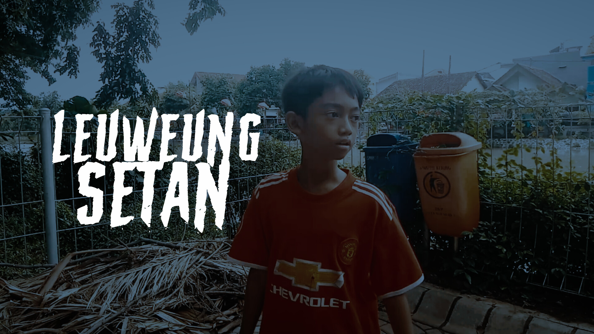
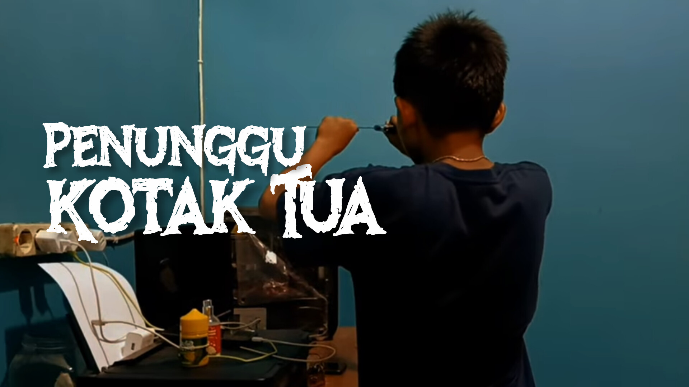

2 Anak laki laki kembali pulang ke rumah saat awal malam setelah bermain, namun saat perjalanan pulang salah satu dari mereka merasa diikuti oleh sosok kepala terbang yang menjadi legenda di hutan itu, ia adalah mbah asep yang mengincar nyawa anak itu..

Pulang dari bermain seorang anak diikuti oleh sosok kepala terbang yang mengincar kepalanya.

Dua anak laki-laki menemukan sebuah kotak tua yang terkubur di halaman belakang rumah.